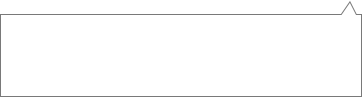
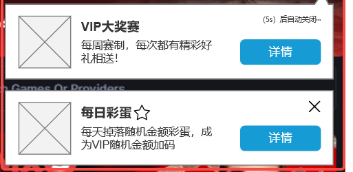

详情
VIP大奖赛
每周赛制，每次都有精彩好礼相送！
（5s）后自动停用···
首页-站内信弹窗
2
前置条件：后台消息模板配置有弹窗
1.弹窗说明
1.1 按【停用形式】分自动停用和手动停用，后台配置
·自动停用，显示文案({*}s)后自动停用···，*s取后台配置，自动倒计时结束后自动停用弹窗
·手动停用，固定停用按钮用户手动停用，点击后停用弹窗
1.2 弹窗背景后台上传（背景中包含主标题和副标题）
1.3 弹窗按钮，按钮名称和跳转为后台配置
1.4 弹窗列表：
-超过一个使用堆叠形式显示（样式见UI稿），需停用一个弹窗才显示下一个弹窗
--弹窗中包含倒计时自动停用的，显示时才开始倒计时
--点击弹窗按钮后，信件转为已读
--用户未操作弹窗，直接进入站内信列表阅读信件，对应首页的弹窗自动停用
-显示顺序，按发送时间，时间最晚的排在最顶层
2.信箱icon说明
2.1 右上角动态显示【未读信件+待领取奖励】的数量，数量为0时红点消失


3.站内信弹窗和首页弹窗同时出现的处理
同时出现时，站内信弹窗在全局弹窗的蒙层下；
若站内信弹窗有倒计时，倒计时在停用首页弹窗时才开始；
停用全局弹窗后，过10s再显示站内信弹窗